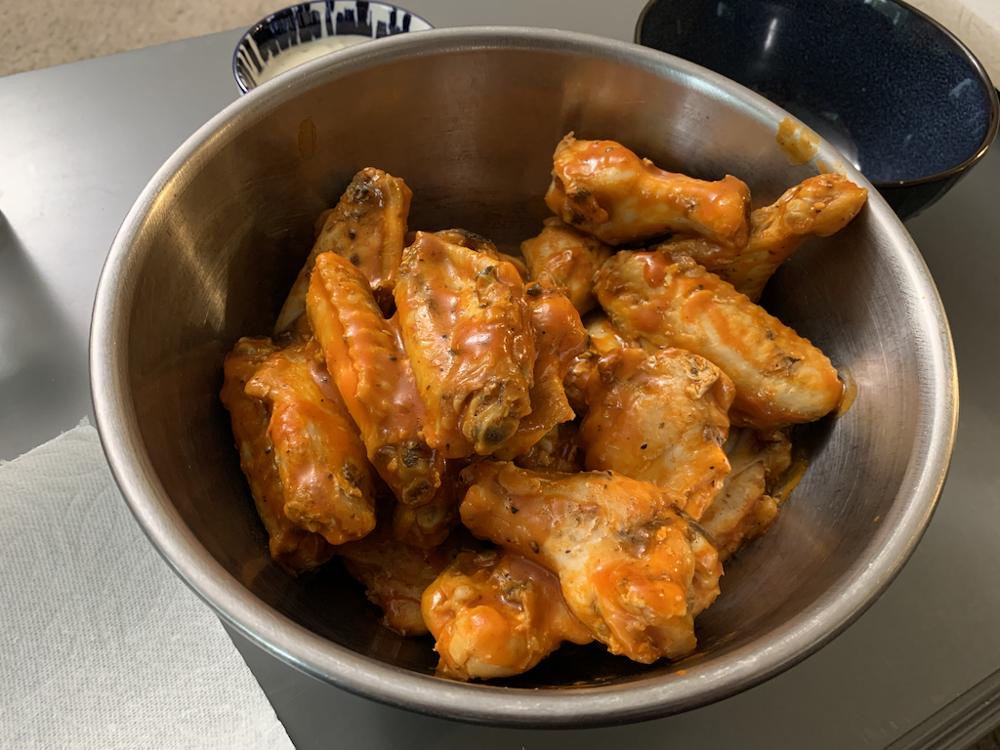

Mom's Famous Hot Wings
Ingredients
Directions
- Cut the chicken wings into individual pieces (wing and drum).
- Place all the cut wing pieces into a glass cooking dish.
- Cover generously with sea salt and pepper, stir, repeat
- Cook the wings at 350 degrees for 60 minutes
- Place cooked wings into frying pan on high heat
- Sear wings until they begin to brown, then add hot sauce
- Simmer wings in hot sauce for 2-3 minutes, stirring to evenly coat them.
- Remove pan from heat, let stand 5 minutes, then enjoy!
While I've never been a big fan of spicy food, my sons and husband have always loved hot wings. While this recipe is simple, it's always been a hit, and is really easy to make!
